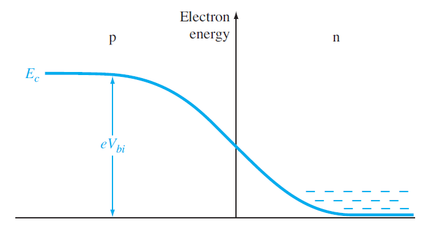

| Región P | Región N | |
|---|---|---|
| Concentraciones de portadores minoritarios | Electrones en la región P: \begin{equation} n_p = n_{p0} \exp{ \left( \frac{eV_a}{k_BT} \right) } \end{equation} | Huecos en la región N: \begin{equation} p_n = p_{n0} \exp{ \left( \frac{eV_a}{k_BT} \right) } \end{equation} |
La región N contiene muchos más electrones en la banda de conducción que en la región P. El $ V_{bi} $ impide que estos electrones fluyan hacia la región P.

| Región P | Región N | |
|---|---|---|
| Asumiendo ionización completa | La concentración de portadores mayoritarios en la región P (huecos) en equilibrio térmico $ p_{p0} $ es: \begin{equation} p_{p0} \approx N_a \end{equation} Y la concentración de portadores minoritarios en la región P (electrones) en equilibrio térmico $ n_{p0} $ es: \begin{equation} n_{p0} \approx \frac{n_i^2}{N_a} \end{equation} | La concentración de portadores mayoritarios en la región N (electrones) en equilibrio térmico $ n_{n0} $ es: \begin{equation} n_{n0} \approx N_d \end{equation} Y la concentración de portadores minoritarios en la región N (huecos) en equilibrio térmico $ p_{n0} $ es: \begin{equation} p_{n0} \approx \frac{n_i^2}{N_d} \end{equation} |
| Sustituyendo en ecuación de concentraciones | \begin{equation} \frac{n_{p0}}{n_{n0}} = \exp{ \left( -\frac{V_{bi}}{V_t} \right) } \end{equation} \begin{equation} \implies n_{p0} = n_{n0} \exp{ \left( -\frac{V_{bi}}{V_t} \right) } \end{equation} | \begin{equation} \frac{p_{n0}}{p_{p0}} = \exp{ \left( -\frac{V_{bi}}{V_t} \right) } \end{equation} \begin{equation} \implies p_{n0} = p_{p0} \exp{ \left( -\frac{V_{bi}}{V_t} \right) } \end{equation} |
| Región P | Región N | |
|---|---|---|
| Aplicación de voltaje en directa | La concentración de portadores minoritarios en la región P (electrones) al aplicar un voltaje $ V_a $ es: \begin{align} n_p & = n_{n0} \exp{ \left( -\frac{V_{bi} - V_a}{V_t} \right) } \\ & = n_{n0} \exp{ \left( -\frac{V_{bi}}{V_t} \right) } \exp{ \left( \frac{V_a}{V_t} \right) } \\ & = n_{p0} \exp{ \left( \frac{V_a}{V_t} \right) } \\ \end{align} | La concentración de portadores minoritarios en la región N (huecos) al aplicar un voltaje $ V_a $ es: \begin{align} p_n & = p_{p0} \exp{ \left( -\frac{V_{bi} - V_a}{V_t} \right) } \\ & = p_{p0} \exp{ \left( -\frac{V_{bi}}{V_t} \right) } \exp{ \left( \frac{V_a}{V_t} \right) } \\ & = p_{n0} \exp{ \left( \frac{V_a}{V_t} \right) } \\ \end{align} |